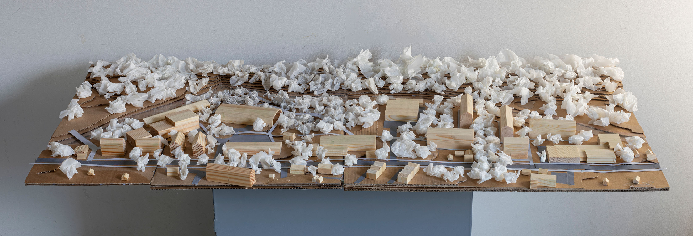
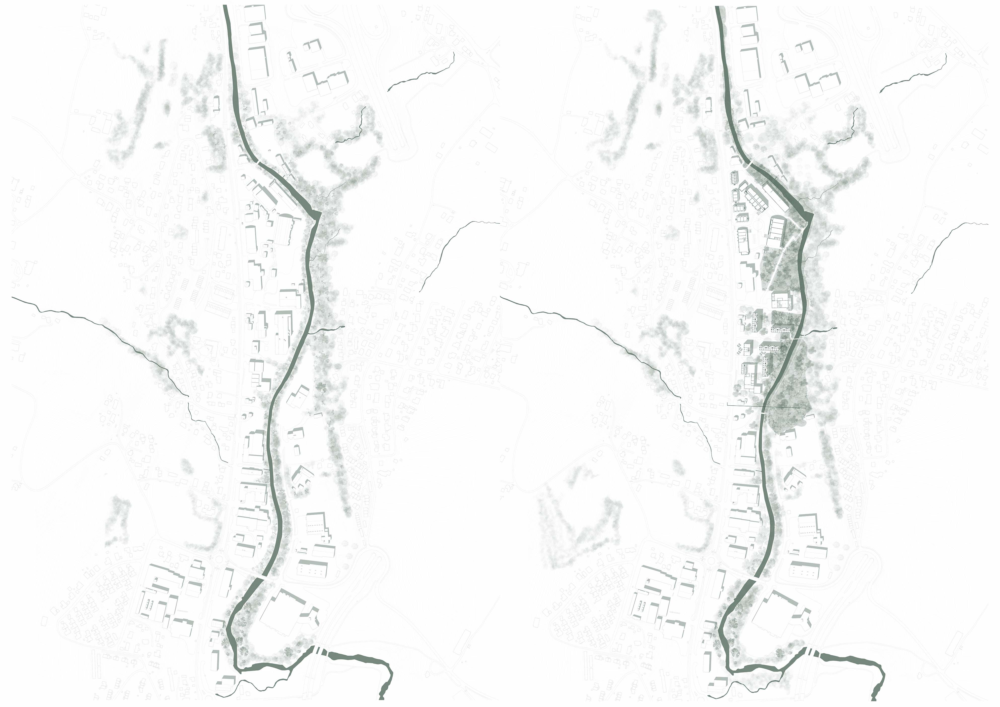
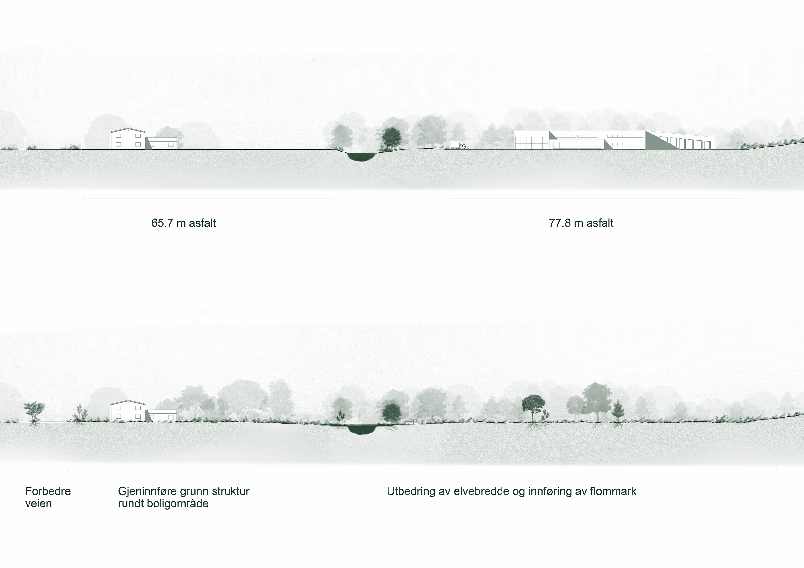
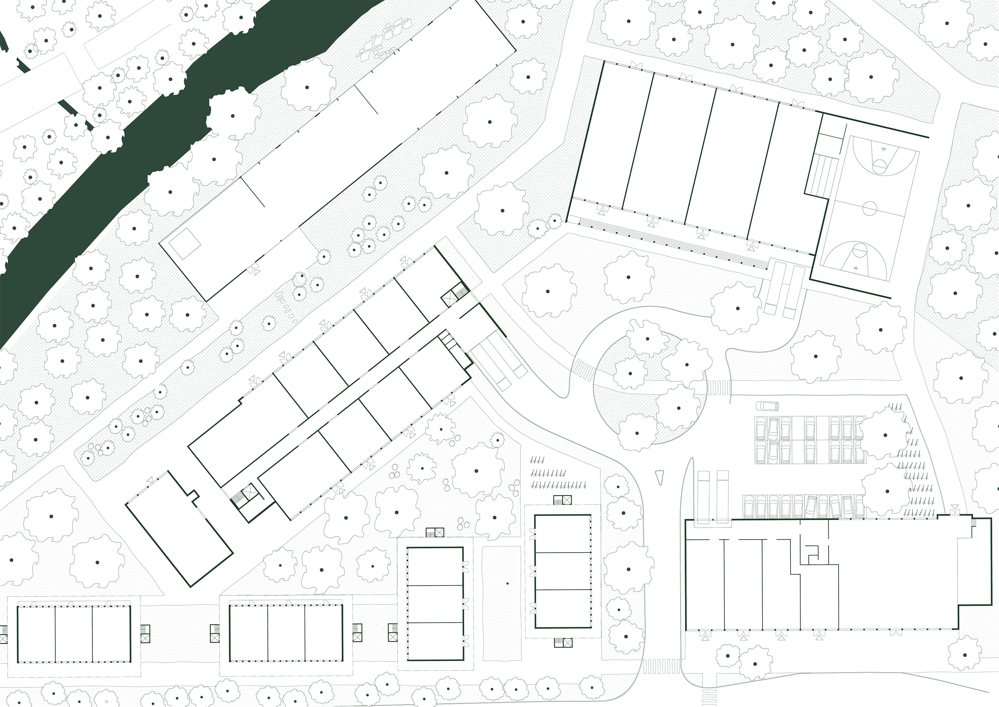
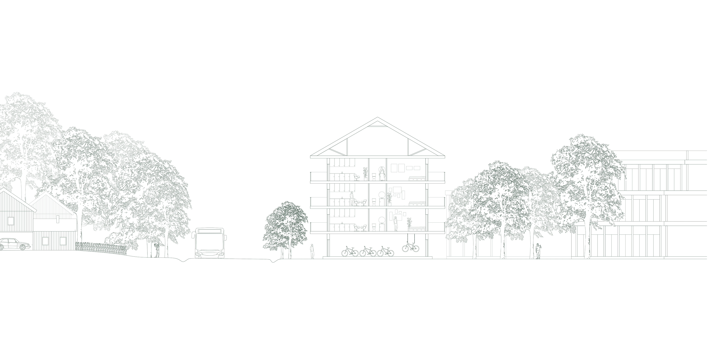
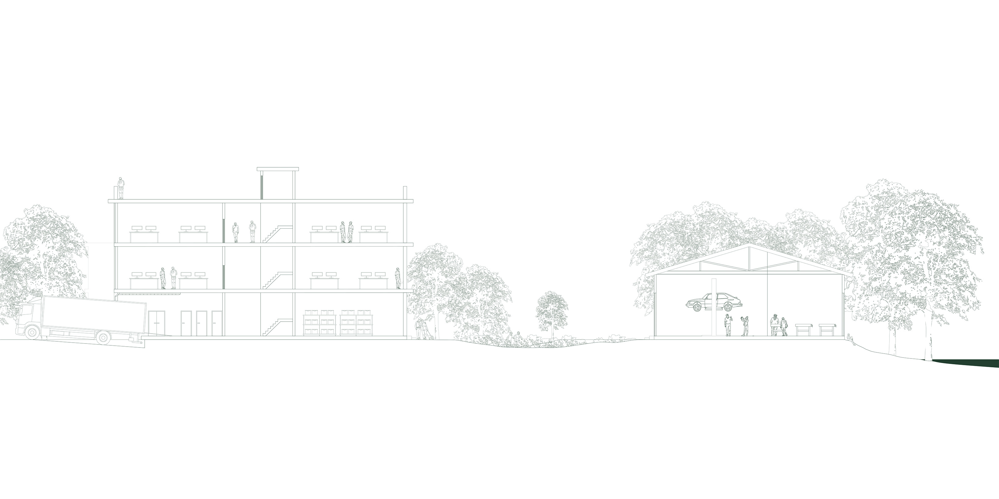
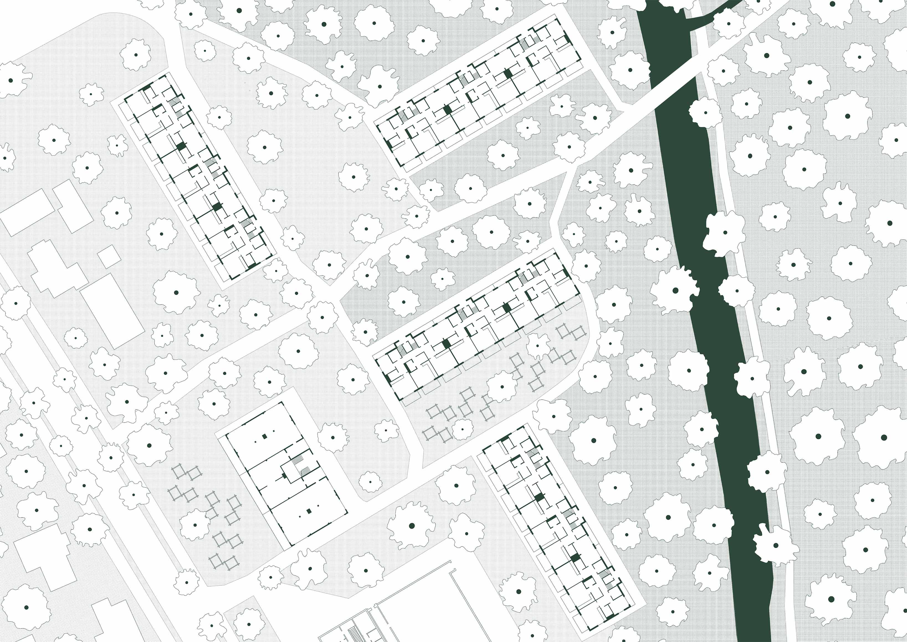
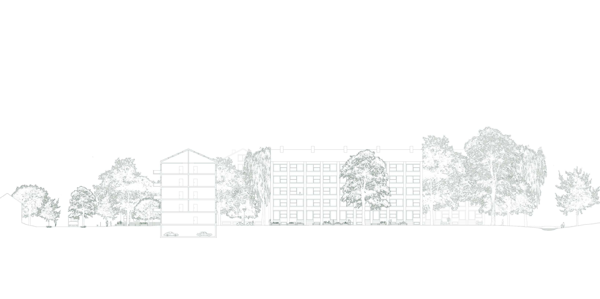

ISIELVA / NÆRINGSMARK
The Oslo Fjord is being polluted from several sources - Isielva being the largest contributor. Further up the stream there is heavy industry along the river devastated by annual flooding. This project suggests strengthening the green and blue structures in the area while introducing residential and educational zones into the area, with the goal of finding a balance where the youth of Bærum may partake in a lighter, more compatible industry.







